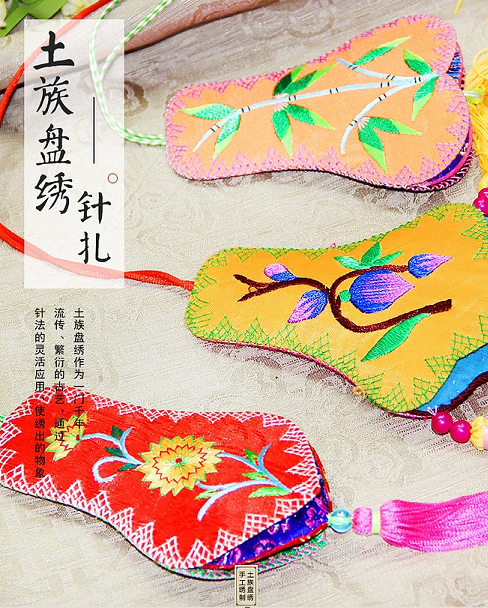
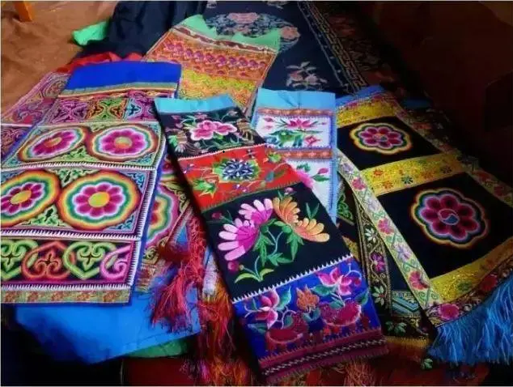

河涅刺绣
河涅刺绣是“青绣”的一类，伴随三川土族的成长、发展代代相传，至今已有一千多年的历史。主要以平绣为主，另外还有盘绣、拉绣、网绣、锁绣等多种绣法。河涅刺绣做工精细，构图简练用色艳丽、对比强烈，有着一种古朴的气息。

法海寺壁画绘制于明代，共有十面，保存完好。其艺术 成就极高，法海寺壁画在绘制技法上采用了传统的重彩设色 和难度很高的沥粉堆金的技法，这在国内壁画中是仅有的。 复杂而精细的绘制技法，使法海寺壁画精美绝伦。在人物的 刻划上，壁画中各类人物的形象神态、服饰无不精细入微， 惟妙惟肖。
土族盘绣，青海省互助县土族民间传统美术，国家级非物质文化遗产之一。
土族盘绣艺术主要流传在青海互助县东沟、东山、五十、松多、丹麻等乡镇。在青海省都兰县发掘的土族先祖吐谷浑墓葬中，就出土有类似盘绣的绣品，由此可知，4世纪左右盘绣工艺已经出现。盘绣用料考究，加工精细，以黑色纯棉布做底料，再选面料贴上。盘绣是丝线绣，有红、黄、绿、蓝桂红、紫、白等七色绣线，绣时一般七色俱全，配色协调，鲜艳夺目。